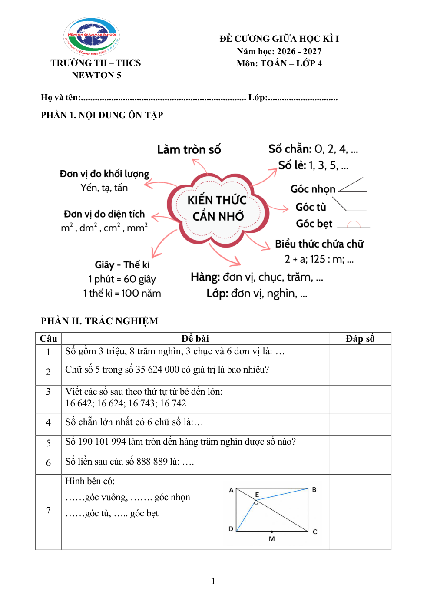
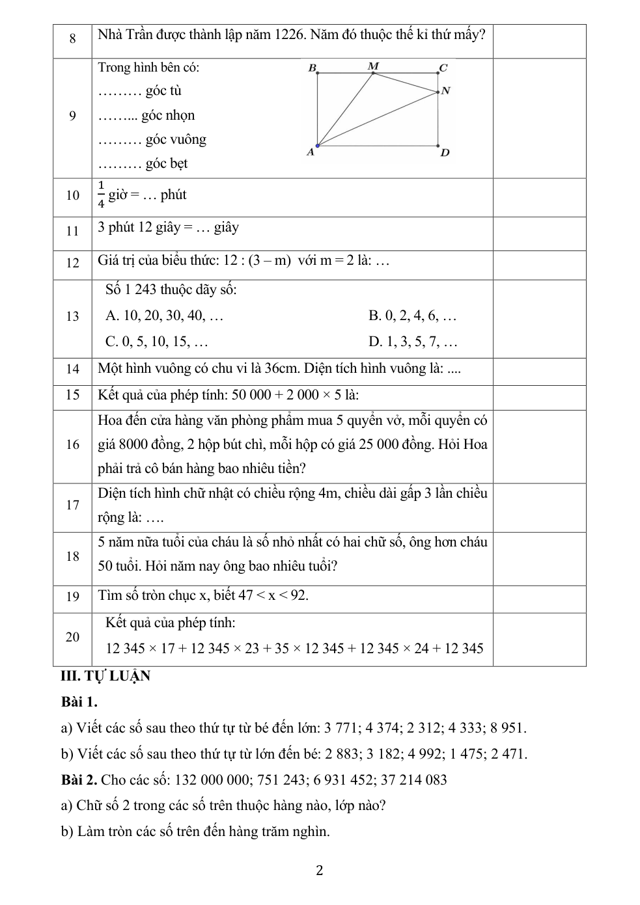
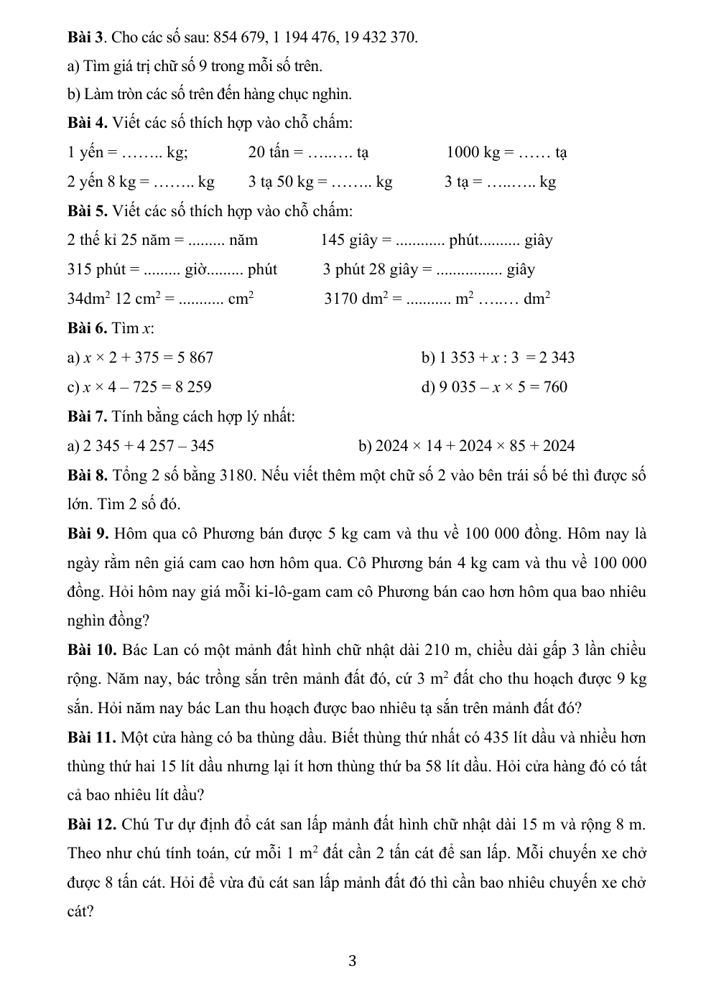
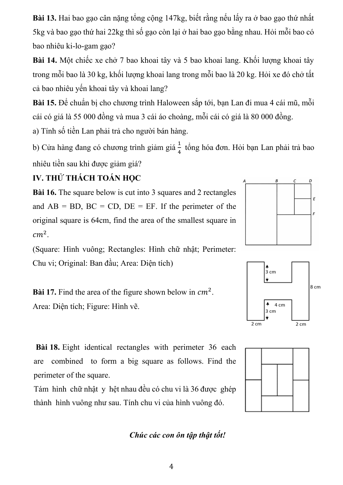

Trang PDF tính từ 1. TIMOK 4 có một trang bìa nên trang in = trang PDF − 1. Link PDF mở bản sao nguồn kèm trong thư mục sources; ảnh nguồn cũng được kèm. Sao chép cả thư mục html để giữ đầy đủ hình và PDF.
Tài liệu chính
Nguồn: [26 -27] ĐỀ CƯƠNG GIỮA KÌ 1 TOÁN 4.pdf · trang PDF 1
Nguồn: TIMOK4.pdf · trang PDF 1 · trang in 0
Nguồn: 4 GE. CĐ 1. Tính nhanh - Tìm thành phần chưa biết.pdf · trang PDF 1
Nguồn: [26-27]. Toán 4.CĐ 2. Cấu tạo số.pdf · trang PDF 1
Nguồn: TN 4. CĐ 2. DÃY SỐ.pdf · trang PDF 1
Nguồn: TN 4. CĐ 5. Dấu hiệu chia hết.pdf · trang PDF 1
Nguồn: 4 GE. CĐ 2. Dạng toán liên quan đến chữ số tận cùng.pdf · trang PDF 1
Nguồn: TN 4. CĐ 4. TỔNG HIỆU.pdf · trang PDF 1
Căn cứ lý thuyết bổ sung
Chu kì/tận cùng: phiếu Chữ số tận cùng PDF 1; quy luật/dãy: phiếu Dãy số PDF 1–2; tổng–hiệu: phiếu Tổng hiệu PDF 1; đếm/đường đi: TIMO khung chương trình PDF 5 và lời giải vòng loại đề 2 PDF 68–70. Các giải thích và bước giải trong HTML là biên soạn lại từ dữ kiện nguồn.
Ảnh lời giải trên lớp
Thư mục “Bài 6, Bài 8 Chuyên đề Tính nhanh + Tìm X” gồm 10 ảnh. Có bài 6 a–i và 8 a–d đã chữa; đây không phải bằng chứng con tự làm đúng.
Đề cương gốc
Giữa kì PDF 1

Giữa kì PDF 2

Giữa kì PDF 3

Giữa kì PDF 4
